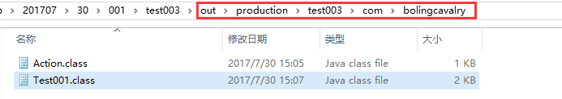
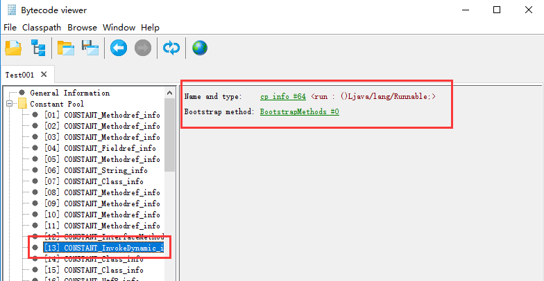
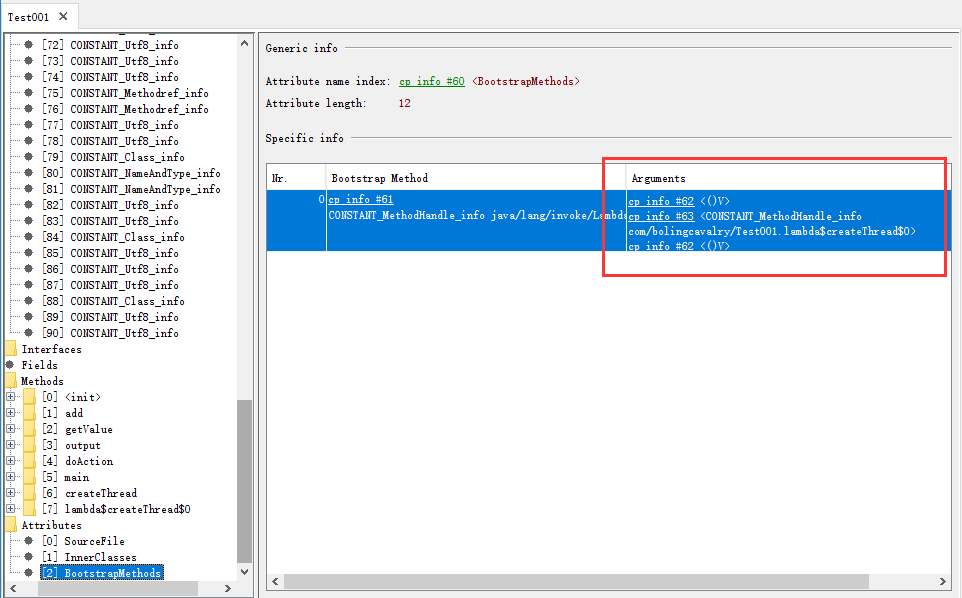

Java1.8环境下，我们在编写程序时会进行各种方法调用，虚拟机在执行这些调用的时候会用到不同的字节码指令，共有如下五种：
这里我们通过一个实例将这些方法调用的字节码指令逐个列出。
实例共两个java文件，一个是接口另一个是类，先看接口源码，很简单只有一个方法声明：
package com.bolingcavalry;
public interface Action {
void doAction();
}接下来的类实现了这个接口，而且还有自己的共有、私有、静态方法：
package com.bolingcavalry;
public class Test001 implements Action{
private int add(int a, int b){
return a+b;
}
public String getValue(int a, int b){
return String.valueOf(add(a,b));
}
public static void output(String str){
System.out.println(str);
}
@Override
public void doAction() {
System.out.println("123");
}
public static void main(String[] args){
Test001 t = new Test001();
Action a = t;
String str = t.getValue(1,2);
t.output(str);
t.doAction();
a.doAction();
}
public void createThread(){
Runnable r = () -> System.out.println("123");
}
}小结一下，Test001的代码中主要的方法如下：
接下来我们通过javac命令或者ide工具得到Action.class和Test001.class文件，如果是用Intellij IDEA，可以先把Test001运行一遍，然后在工程目录下找到out文件夹，打开后里面是production文件夹，再进去就能找到对应的package和class文件了，如下图：

打开命令行，在Test001.class目录下执行javap -c Test001.class
，就可以对class文件进行反汇编，得到结果如下：
Compiled from "Test001.java"
public class com.bolingcavalry.Test001 implements com.bolingcavalry.Action {
public com.bolingcavalry.Test001();
Code:
0: aload_0
1: invokespecial #1 // Method java/lang/Object."<init>":()V
4: return
public java.lang.String getValue(int, int);
Code:
0: aload_0
1: iload_1
2: iload_2
3: invokespecial #2 // Method add:(II)I
6: invokestatic #3 // Method java/lang/String.valueOf:(I)Ljava/lang/String;
9: areturn
public static void output(java.lang.String);
Code:
0: getstatic #4 // Field java/lang/System.out:Ljava/io/PrintStream;
3: aload_0
4: invokevirtual #5 // Method java/io/PrintStream.println:(Ljava/lang/String;)V
7: return
public void doAction();
Code:
0: getstatic #4 // Field java/lang/System.out:Ljava/io/PrintStream;
3: ldc #6 // String 123
5: invokevirtual #5 // Method java/io/PrintStream.println:(Ljava/lang/String;)V
8: return
public static void main(java.lang.String[]);
Code:
0: new #7 // class com/bolingcavalry/Test001
3: dup
4: invokespecial #8 // Method "<init>":()V
7: astore_1
8: aload_1
9: astore_2
10: aload_1
11: iconst_1
12: iconst_2
13: invokevirtual #9 // Method getValue:(II)Ljava/lang/String;
16: astore_3
17: aload_1
18: pop
19: aload_3
20: invokestatic #10 // Method output:(Ljava/lang/String;)V
23: aload_1
24: invokevirtual #11 // Method doAction:()V
27: aload_2
28: invokeinterface #12, 1 // InterfaceMethod com/bolingcavalry/Action.doAction:()V
33: return
public void createThread();
Code:
0: invokedynamic #13, 0 // InvokeDynamic #0:run:()Ljava/lang/Runnable;
5: astore_1
6: return
}现在我们可以对比反汇编结果来学习字节码的用法了：
getValue()方法中调用了私有实例方法add(int a, int b)，反编译结果如下所示，注意编号为3的那一行：
public java.lang.String getValue(int, int);
Code:
0: aload_0
1: iload_1
2: iload_2
3: invokespecial #2 // Method add:(II)I
6: invokestatic #3 // Method java/lang/String.valueOf:(I)Ljava/lang/String;
9: areturn可见私有实例方法的调用是通过invokespecial指令来实现的；
getValue()方法中，调用了静态方法String.valueOf()，反编译结果如下所示，注意编号为6的那一行：
public java.lang.String getValue(int, int);
Code:
0: aload_0
1: iload_1
2: iload_2
3: invokespecial #2 // Method add:(II)I
6: invokestatic #3 // Method java/lang/String.valueOf:(I)Ljava/lang/String;
9: areturn可见静态方法的调用是通过invokestatic指令来实现的；
在main()方法中，调用了t.getValue(1,2)方法，反编译结果如下所示，注意编号为13的那一行：
public static void main(java.lang.String[]);
Code:
0: new #7 // class com/bolingcavalry/Test001
3: dup
4: invokespecial #8 // Method "<init>":()V
7: astore_1
8: aload_1
9: astore_2
10: aload_1
11: iconst_1
12: iconst_2
13: invokevirtual #9 // Method getValue:(II)Ljava/lang/String;
16: astore_3
17: aload_1
18: pop
19: aload_3
20: invokestatic #10 // Method output:(Ljava/lang/String;)V
23: aload_1
24: invokevirtual #11 // Method doAction:()V
27: aload_2
28: invokeinterface #12, 1 // InterfaceMethod com/bolingcavalry/Action.doAction:()V
33: return
}可见调用一个实例的方法的时候，通过invokevirtual指令来实现的；
在main()方法中，我们声明了接口Action a，然后调用了a.doAction()，反编译结果如下所示，注意编号为28的那一行：
public static void main(java.lang.String[]);
Code:
0: new #7 // class com/bolingcavalry/Test001
3: dup
4: invokespecial #8 // Method "<init>":()V
7: astore_1
8: aload_1
9: astore_2
10: aload_1
11: iconst_1
12: iconst_2
13: invokevirtual #9 // Method getValue:(II)Ljava/lang/String;
16: astore_3
17: aload_1
18: pop
19: aload_3
20: invokestatic #10 // Method output:(Ljava/lang/String;)V
23: aload_1
24: invokevirtual #11 // Method doAction:()V
27: aload_2
28: invokeinterface #12, 1 // InterfaceMethod com/bolingcavalry/Action.doAction:()V
33: return
}可见调用一个接口的方法是通过invokeinterface指令来实现的；
其实t.doAction()和a.doAction()最终都是调用Test001的实例的doAction，但是t的声明是类，a的声明是接口，所以两者的调用指令是不同的；
在main()方法中，我们声明了一个lambda() -> System.out.println("123")，反编译的结果如下：
0: invokedynamic #13, 0 // InvokeDynamic #0:run:()Ljava/lang/Runnable;
5: astore_1
6: return可见lambda表达式对应的实际上是一个invokedynamic调用，具体的调用内容，可以用Bytecode viewer这个工具来打开Test001.class再研究，由于反编译后得到invokedynamic的操作数是#13，我们先去常量池看看13对应的内容：

是个Name and type和Bootstrap method，再细看Bootstrap method的操作数，如下图：

是个MethodHandler的引用，指向了用户实现的lambda方法；
以上就是五种方法调用的字节码指令的简单介绍，实际上每个指令背后都对应着更复杂的调用和操作，有兴趣的读者可以通过虚拟机相关的书籍和资料继续深入学习。